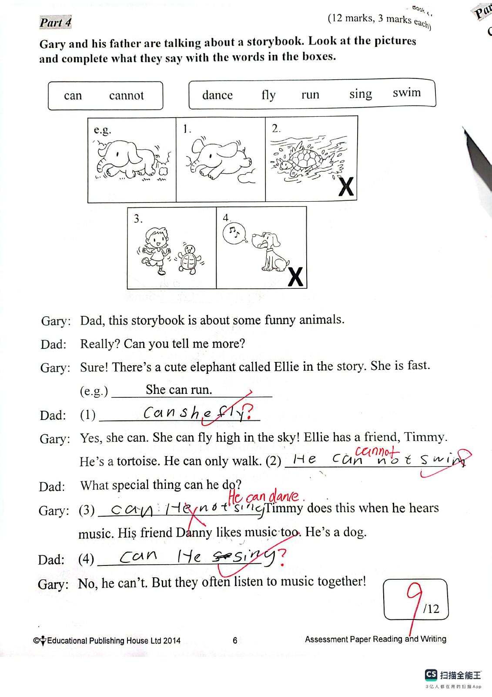
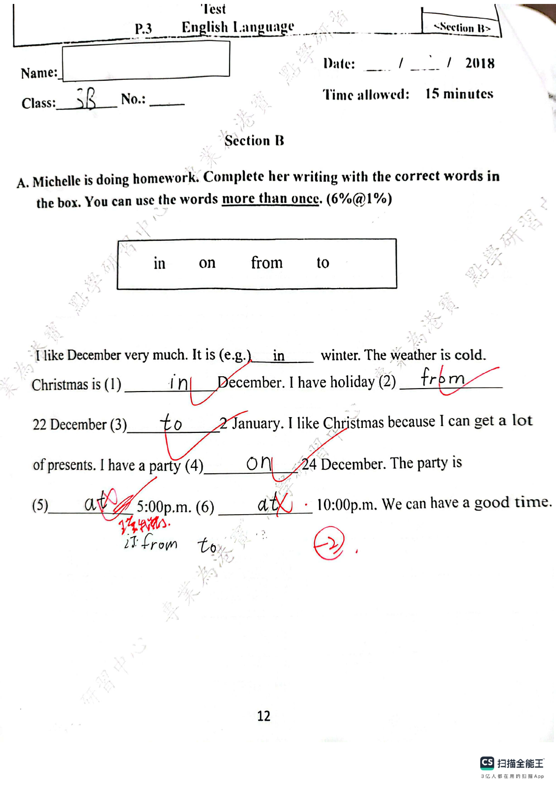

Answer: (a) kg; (b) g; (c) cm; (d) kg
已掌握
| # | 单词/词组 | 中文意思 | 例句/说明 | 已掌握 |
|---|---|---|---|---|
| noun 名词 | ||||
| 1 | postcard | 明信片 | I sent a postcard to my friend. | |
| 2 | present | 礼物 | I got a present from my mother. | |
| 3 | library | 图书馆 | I read books in the library. | |
| 4 | fur | 皮毛 | The rabbit has soft fur. | |
| 5 | group | 小组 | We work in a group. | |
| 6 | activity | 活动 | This activity is fun. | |
| 7 | art | 艺术 | We learn to draw in art class. | |
| 8 | case | 盒子 | Put your pencils in the case. | |
| 9 | information | 信息 | This book gives us useful information. | |
| verb 动词 | ||||
| 10 | locate | 定位 | We can locate the place on the map. | |
| 11 | wait | 等待 | Please wait for me at the gate. | |
| 12 | stand | 站立 | Please stand in a line. | |
| 13 | believe | 相信 | I believe you are telling the truth. | |
| 14 | fold | 折叠 | Please fold the paper in half. | |
| phrase 短语 | ||||
| 15 | Christmas Eve | 平安夜 | We decorate the tree on Christmas Eve. | |
| noun phrase 名词短语 | ||||
| 16 | MTR station | 地铁站 | The MTR station is near my home. | |
| 17 | swimming pool | 游泳池 | I swim in the swimming pool. | |
| 18 | school hall | 礼堂 | We sing together in the school hall. | |
| adjective 形容词 | ||||
| 19 | dry | 干燥的；干的 | My clothes are dry now. | |
| possessive adjective 物主代词 | ||||
| 20 | their | 他们的 | Their bags are blue. | |
| # | 单词/词组 | 中文意思 | 例句/说明 | 已掌握 |
|---|---|---|---|---|
| adjective 形容词 | ||||
| 1 | responsible | 负责的 | I am responsible for looking after the gorillas, monkeys and elephants. | |
| noun 名词 | ||||
| 2 | soup | 汤 | The soup is hot. | |
| 3 | axe | 斧头 | The man has an axe. | |
| 4 | pond | 池塘 | There is a small pond in the park. | |
| 5 | teenager | 青少年 | My brother is a teenager. He is fifteen. | |
| 6 | chapter | 章节 | This chapter is about animals. | |
| 7 | ice-skating | 溜冰 | She likes ice-skating in winter. | |
| 8 | cola | 可乐 | I'd like three cans of cola, please. | |
| 9 | header | 邮件信头 | The email header shows the sender's address. | |
| 10 | quantity | 数量 | The receipt shows the quantity of each item we bought. | |
| 11 | biscuit | 饼干 | Would you like a biscuit with your milk? | |
| noun phrase 名词短语 | ||||
| 12 | secondary school student | 中学生 | My cousin is a secondary school student. | |
| 13 | department store | 百货商店 | We shop at the department store. | |
| 14 | Test Week | 测试周 | Test Week is from 16th April to 20th April. | |
| 15 | a purse | （女式）钱包 | I gave her a purse. | |
| 16 | special set | 特惠套装 | The special set includes a sandwich and a drink. | |
| 17 | handicraft lesson | 手工课 | We make paper animals in our handicraft lesson. | |
| verb 动词 | ||||
| 18 | underline | 划线 | Please underline the word. | |
| 19 | remember | 记得 | Please remember to bring your book. | |
| 20 | splash | 泼洒；溅 | They splash water onto one another. | |
| preposition 介词 | ||||
| 21 | at | 在（某时刻/点钟） | It starts at two o'clock in the afternoon. | |
| verb phrase 动词短语 | ||||
| 22 | play Chinese chess | 下中国象棋 | I can't play Chinese chess or Chinese checkers. | |
| 23 | chatting with friends | 和朋友聊天 | He likes chatting with friends. | |
| 24 | making models | 制作模型 | Hiro likes making models of robots. | |
| 25 | listening to music | 听音乐 | He likes listening to music. | |
| 26 | play with lanterns | 玩灯笼 | We play with lanterns at night. | |
| 27 | sweep the floor | 扫地 | I help my dad sweep the floor. | |
| 28 | take ... for walks | 带……去散步 | I usually take him for walks. | |
| 29 | turn on | 打开（电器） | It only takes a few seconds to turn on your computer again. | |
| adverbial phrase 副词短语 | ||||
| 30 | per day | 每天 | Our dog goes for two walks per day. | |
| # | 单词/词组 | 中文意思 | 例句/说明 | 已掌握 |
|---|---|---|---|---|
| time/date 时间日期 | ||||
| 1 | March | 三月 | March is the third month. | |
| 2 | November | 十一月 | November is the eleventh month. | |
| time unit 时间单位 | ||||
| 3 | month | 月 | A month has many days. | |
| directions 方向 | ||||
| 4 | east | 东 | The sun rises in the east. | |
| 5 | south | 南 | South is a direction. | |
| numbers 数字 | ||||
| 6 | one | 1 | One is 1. | |
| 7 | fourteen | 14 | Fourteen is 14. | |
| 8 | eighteen | 18 | Eighteen is 18. | |
| 9 | twenty | 20 | Twenty is 20. | |
| 10 | fifty | 50 | Fifty is 50. | |
| 11 | eighty | 80 | Eighty is 80. | |
| solid shape 立体图形 | ||||
| 12 | triangular prism | 三棱柱 | A triangular prism has triangular faces. | |
| plane shape 平面图形 | ||||
| 13 | quadrilateral | 四边形 | A quadrilateral has four sides. | |
| 14 | Pentagon | 五边形 | A pentagon has five sides. | |
| 15 | square | 正方形 | A square has four equal sides. | |
| # | 单词/词组 | 中文意思 | 例句/说明 | 已掌握 |
|---|---|---|---|---|
| numbers 数字 | ||||
| 1 | approximate value | 近似值 | The approximate value of 198 to the nearest ten is 200. | |
| operations 运算 | ||||
| 2 | subtraction | 减法 | Subtraction means taking away. | |
| 3 | total | 总共的 | Find the total number of apples. | |
| 4 | altogether | 总共；合计 | How many are there altogether? | |
| 5 | carrying | 进位 | Carrying helps when the ones make ten. | |
| geometry 几何 | ||||
| 6 | perpendicular | 垂直 | Perpendicular lines meet at a right angle. | |
| 7 | parallel | 平行 | Parallel lines never meet. | |
| 8 | adjacent side | 邻边 | These are adjacent sides. | |
| directions 方向 | ||||
| 9 | direction | 方向 | Direction tells us where to go. | |
| question word 题目词 | ||||
| 10 | calculate | 计算 | Calculate the answer. | |
| comparison 比较 | ||||
| 11 | less | 更少的；小于 | 8 is less than 10. | |
| 12 | more | 更多 | 8 is more than 5. | |
| time/date 时间日期 | ||||
| 13 | non-leap year | 平年 | A non-leap year has 365 days. | |
| 14 | small division | 小格（钟面上的一分钟刻度） | The minute hand moves one small division in one minute. | |
| 15 | second hand | 秒针 | The second hand goes around the clock once in one minute. | |
| quantity 数量 | ||||
| 16 | pair | 双 | A pair means two things together. | |
| position 位置 | ||||
| 17 | below | 下面 | The box is below the table. | |
| 18 | front | 前面 | The door is at the front of the room. | |
| operations calculation 运算 | ||||
| 19 | A times B | A✖️B | A times B means multiplication. | |
| 20 | horizontal form | 横式形式 | Write it in horizontal form. | |
| teacher math vocabulary 老师数学词汇 | ||||
| 21 | stop | 停 | Stop counting when you reach twenty. | |
| currency money 货币 | ||||
| 22 | exchange | 兑换（货币） | We exchange money at the counter. | |
| 23 | note | 纸币 | This is a five-dollar note. | |
| measurement 测量 | ||||
| 24 | metre | 米 | A metre is 100 centimetres. | |
| 25 | height | 高度 | Measure the height of the box. | |
| 26 | kilogram | 千克 | One kilogram is 1,000 grams. | |
| 句型结构 | ||||
| 27 | Angle ... is larger than Angle ... | 角......大于角...... | Angle A is larger than Angle B. | |
| 28 | ... is to the south of ... | ......位于......的南侧。 | The library is to the south of the shop. | |
| 29 | ... is to the north of ... | ......位于......的北侧。 | The playground is to the north of the hall. | |
| plane shape 平面图形 | ||||
| 30 | isosceles trapezium | 等腰梯形 | An isosceles trapezium has two equal legs. | |

